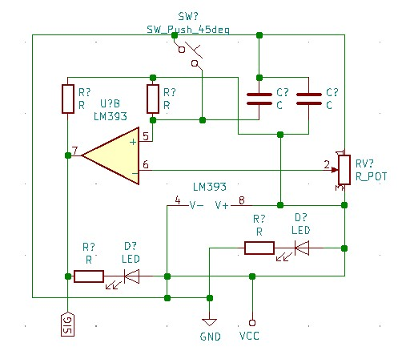
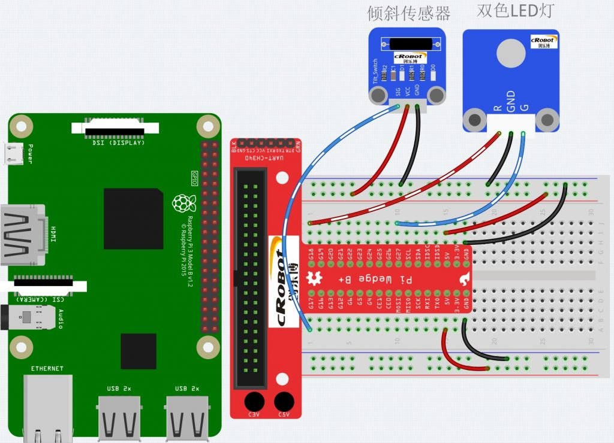
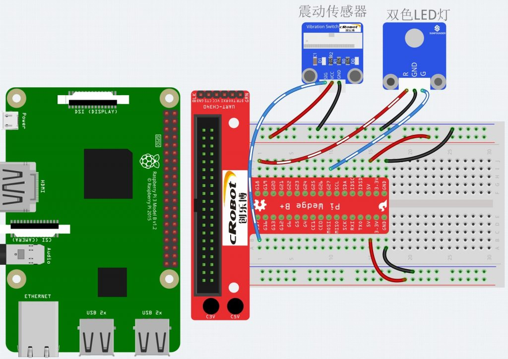

Tilt Vibration Switch 倾斜,震动模块。倾斜开关内部金属球根据角度不同来导通电路，输出低电平。震动模块是根据内部的弹簧震动来触发导通电流。文章内容为：模块的原理图，模块接线图，相关代码。
倾斜和震动模块电路是一样的.（根据模块测量绘制的原理图）

两个模块的接线方式是一样的。根据检测到的信号控制LED灯的变色。

倾斜模块

震动模块
模块代码及注释：
1
2
3
4
5
6
7
8
9
10
11
12
13
14
15
16
17
18
19
20
21
22
23
24
25
26
27
28
29
30
31
32
33
34
35
36
37
38
39
40
41
42
43
44
45
46
47
48
49
50
|
#include <wiringPi.h>
#include <stdio.h>
#define TiltPin0
#define Gpin1
#define Rpin2
void LED(char* color)
{
pinMode(Gpin, OUTPUT);
pinMode(Rpin, OUTPUT);
if (color == "RED")
{
digitalWrite(Rpin, HIGH);
digitalWrite(Gpin, LOW);
}
else if (color == "GREEN")
{
digitalWrite(Rpin, LOW);
digitalWrite(Gpin, HIGH);
}
else
printf("LED Error");
}
int main(void)
{
if(wiringPiSetup() == -1){
printf("setup wiringPi failed !");
return 1;
}
pinMode(TiltPin, INPUT);
LED("GREEN");
while(1){
if(0 == digitalRead(TiltPin)){
delay(10);
if(0 == digitalRead(TiltPin)){
LED("RED");
printf("Tilt!\n");
}
}
else if(1 == digitalRead(TiltPin)){
delay(10);
if(1 == digitalRead(TiltPin)){
while(!digitalRead(TiltPin));
LED("GREEN");
printf("ok\n");
}
}
}
return 0;
}
|
1
2
3
4
5
6
7
8
9
10
11
12
13
14
15
16
17
18
19
20
21
22
23
24
25
26
27
28
29
30
31
32
33
34
35
36
37
38
39
40
41
42
43
44
45
46
47
48
49
50
51
52
53
54
55
56
57
|
#include <wiringPi.h>
#include <stdio.h>
#define VibratePin0
#define Gpin1
#define Rpin2
int tmp = 0;
void LED(int color)
{
pinMode(Gpin, OUTPUT);
pinMode(Rpin, OUTPUT);
if (color == 0)
{
digitalWrite(Rpin, HIGH);
digitalWrite(Gpin, LOW);
}
else if (color == 1)
{
digitalWrite(Rpin, LOW);
digitalWrite(Gpin, HIGH);
}
else
printf("LED Error");
}
void Print(int x){
if (x != tmp){
if (x == 0)
printf("...ON\n");
if (x == 1)
printf("OFF..\n");
tmp = x;
}
}
int main(void)
{
int status = 0;
int tmp = 0;
int value = 1;
if(wiringPiSetup() == -1){
printf("setup wiringPi failed !");
return 1;
}
pinMode(VibratePin, INPUT);
while(1){
value = digitalRead(VibratePin);
if (tmp != value){
status ++;
if (status > 1){
status = 0;
}
LED(status);
Print(status);
delay(1000);
}
}
return 0;
}
|
Tilt Vibration Switch原理图下载链接（OneDrive）
Tilt Vibration Switch原理图
树莓派3更多模块请点击链接：
从入门到放弃的学习RASPBERRYPI